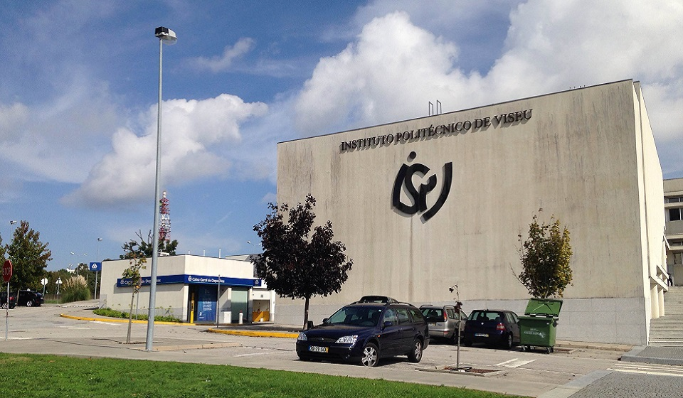

Instituto Politécnico de Viseu

Fundado no dia 26 de dezembro de 1979 é o primeiro e único estabelecimento de ensino superior público do distrito, assinalando assim um marco importante de desenvolvimento para a região de Viseu.
O Instituto Politécnico de Viseu é composto por cinco escolas superiores e uma comunidade constituída por mais de 6000 estudantes, 355 docentes e 230 funcionários.
O Instituto Politécnico de Viseu é uma instituição de ensino superior de direito público ao serviço da sociedade, que tem como objetivos a qualificação de alto nível, a produção e difusão do conhecimento, bem como a formação cultural, artística, tecnológica e científica dos seus estudantes, num quadro de referência internacional.